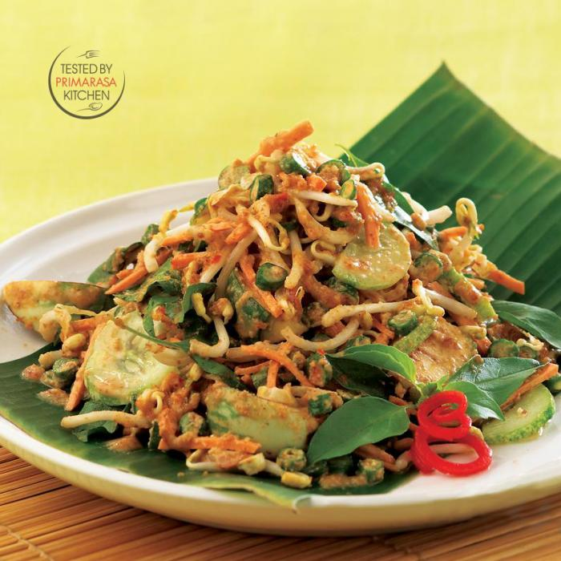
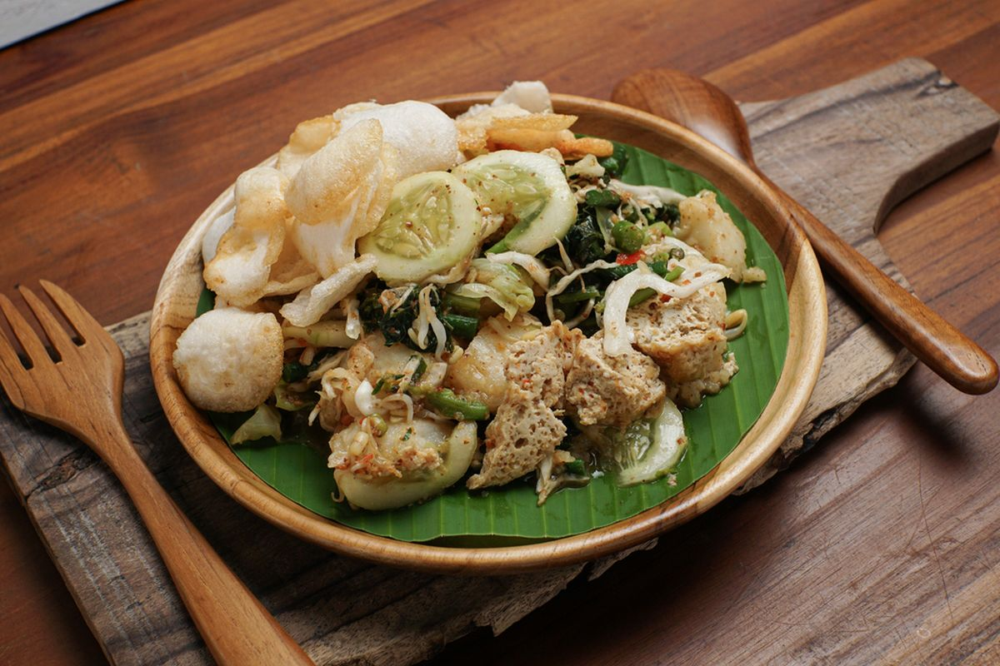

Nasi Liwet
Nasi yang dimasak dengan santan, daun salam, dan serai ini disajikan dengan ikan asin, sambal, dan lalapan. Biasanya disantap bersama keluarga dalam suasana hangat.

Karedok
Karedok adalah salad khas Sunda dengan bahan mentah seperti kacang panjang, kol, dan timun yang disiram bumbu kacang pedas gurih. Segar dan menyehatkan!

Lotek
Sekilas mirip gado-gado, namun dengan cita rasa khas Sunda. Sayuran rebus disajikan dengan bumbu kacang manis-pedas dan kerupuk.

Soto Bandung
Soto dengan kuah bening berisi daging sapi, lobak, dan kedelai goreng. Rasanya ringan tapi kaya aroma rempah.